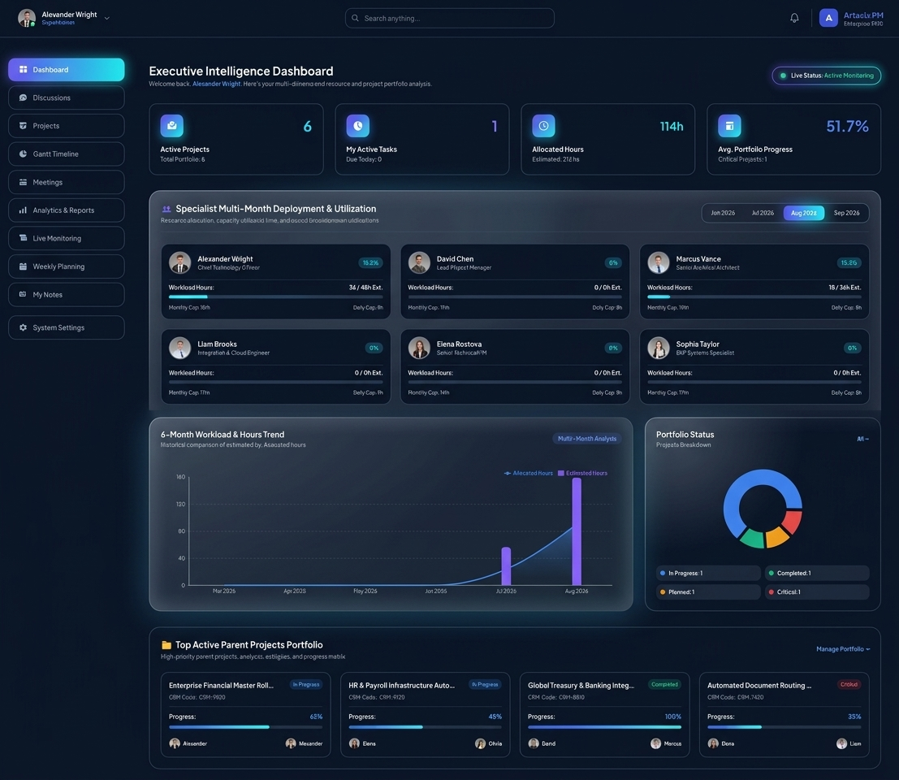
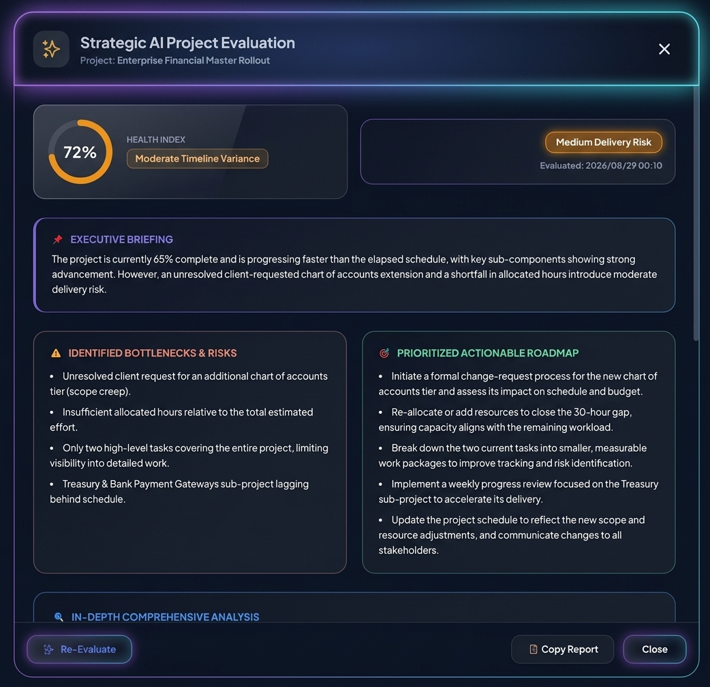
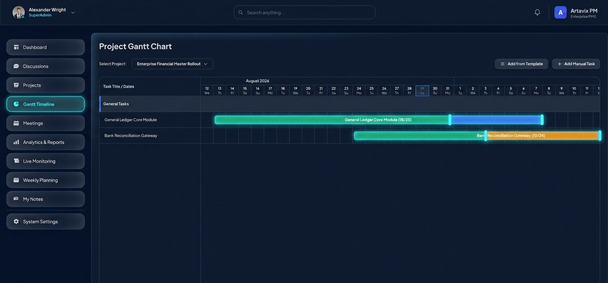
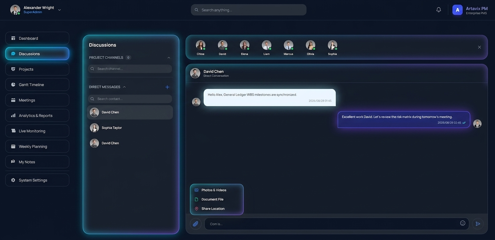
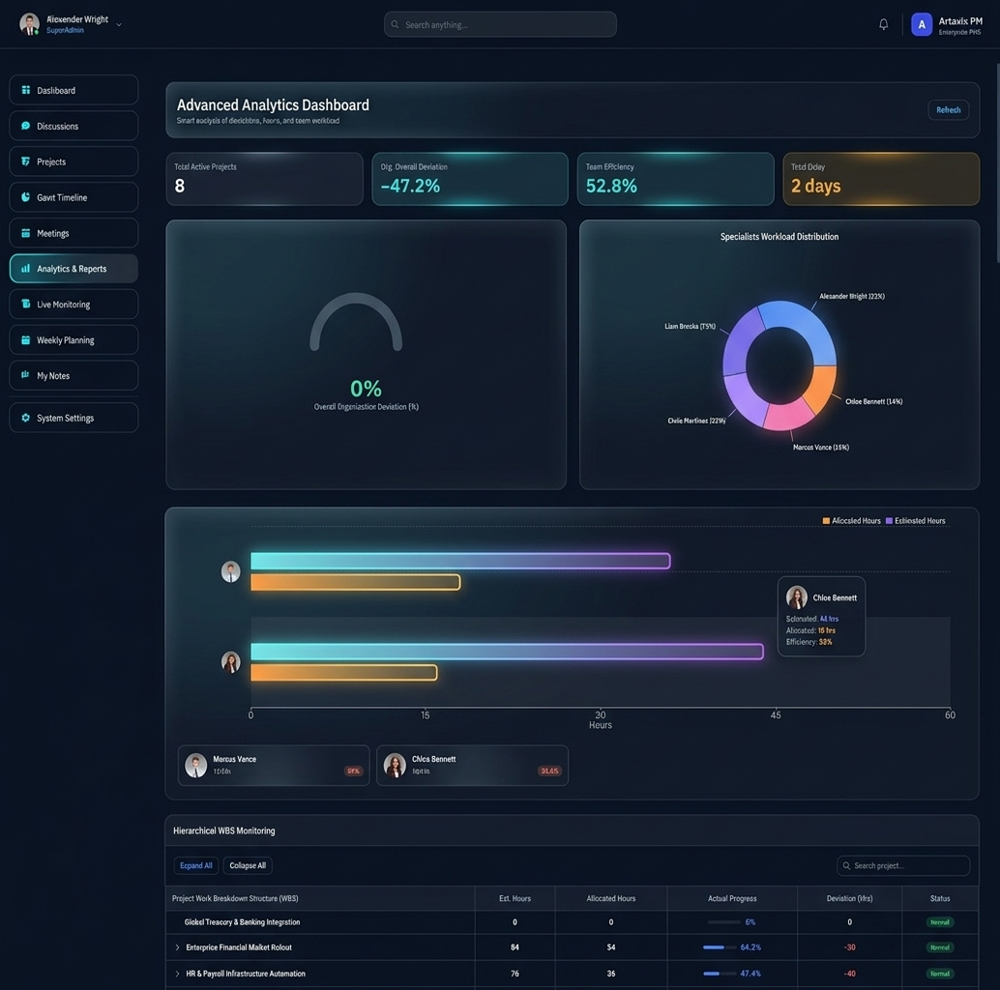

Artavix PM: Enterprise Project & AI Resource Planning
A high-performance full-stack system engineered for WBS hierarchical control, real-time SignalR communications, specialist capacity overflow prevention, and Groq LPU AI-driven project telemetry analysis.

Groq AI-Powered Project Telemetry & Health Score Index
Operating as an embedded Senior PM AI Consultant, the system aggregates full project telemetry—including weighted progress, Gantt task completion, CRM specialist logs, and timeline variances—sending structured payloads to Groq LPU processors for sub-second analysis.
Health Score Index (%) & Risk Tiers
Dynamic percentage gauge with risk categorization into Low, Medium, High, or Critical tiers based on mathematical schedule variance.
Actionable Bottleneck Roadmap
Generates prioritized mitigation roadmaps, identifying exact specialist over-allocations and unassigned deliverables.


Hierarchical WBS & Drag-and-Drop Gantt Timeline
Designed for complex multi-level enterprise projects. Features seamless drag-and-drop timeline resizing, automatic progress handles, and weighted progress aggregation where parent project completion is dynamically calculated from sub-projects.
SignalR-Powered Team Collaboration & Chat Hub
Eliminating status meetings through real-time communication. Features automated project channel creation, direct messaging, live online presence tracking, media preview players, and browser location tagging.


Capacity Overflow Prevention & Live Crisis Monitoring
Engineered to prevent burnout and project delays. Monitors daily (9h cap) and monthly (198h cap) specialist workloads, triggering automated red warning flags when capacity thresholds are breached.
Complete Architectural Breakdown
- • React 18.3 + Vite 6 (SPA)
- • TailwindCSS 3.4 (Flat System)
- • Framer Motion 11 Animations
- • Recharts 3.7 Gauge & Donut Charts
- • @microsoft/signalr 8.0 Client
- • ASP.NET Core 9 Web API (.NET 9)
- • C# 13 Object-Oriented Architecture
- • SignalR ChatHub WebSockets
- • JWT Bearer & BCrypt Security
- • Reminder Hosted Background Service
- • Groq LPU Engine (Llama 3.3 AI)
- • PuppeteerSharp 20.0 CRM Scraper
- • ExcelDataReader 3.7 Parser
- • Hashtag Workflow Rule Engine
- • Sub-second JSON Telemetry Payload
- • SQLite (artavix.db) WAL Mode
- • Entity Framework Core 9.0
- • Auto DataMigrator Engine
- • Multi-Stage Docker Container
- • Production-Ready Infrastructure
Experience Artavix PM Live in Production
Explore the fully functional web application on Vercel or contact Artavix Studio for custom enterprise software development.